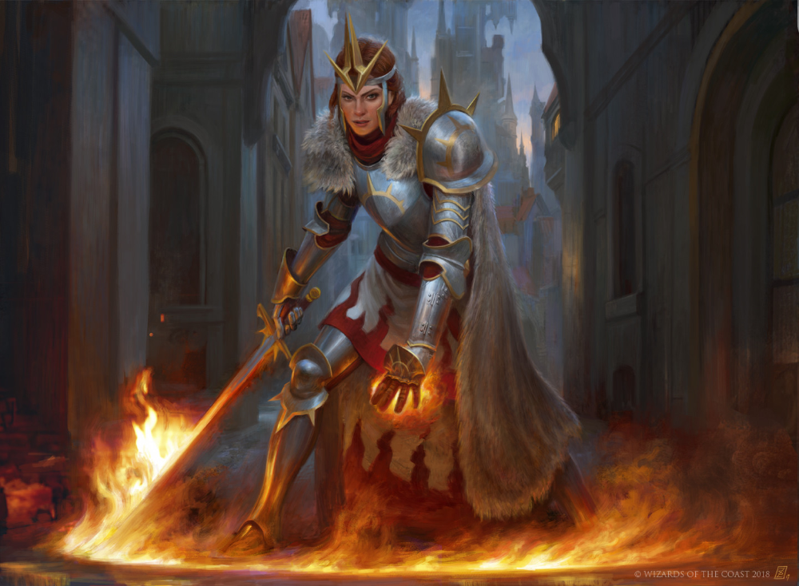
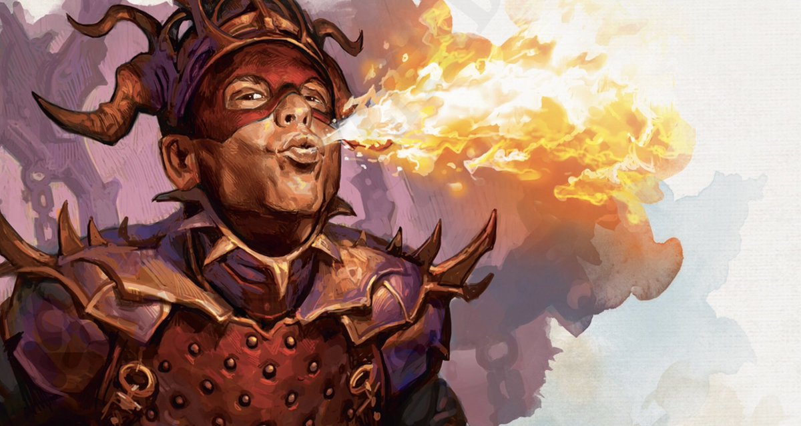
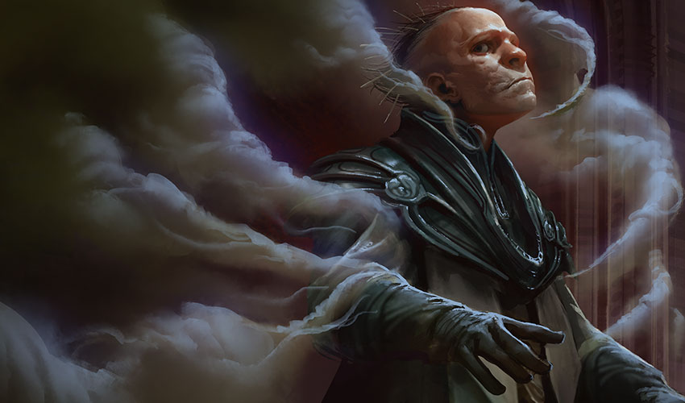

World of Ravnica

Meu exército. Minha ofensiva. Minha guilda.
A Legião Boros é a guilda da lei justa e da justiça feroz. A força militar mais formidável de Ravnica, os Boros são eficientes, seguros de si e zelosos na busca de seus objetivos. Os Boros acreditam apaixonadamente na lei. Para eles, ela é a estrutura pela qual a sociedade funciona e o mapa do caminho para o bem-estar e a segurança da sociedade. Qualquer coisa que viola a letra da lei, ameaça o espírito da lei ou obstrui a aplicação da lei é considerada inimiga da Legião Boros. Na prática, qualquer um que discorde dos Boros é inimigo dos Boros.
Nessa aventura você será um soldado Boros a caminho de impedir uma rebelião próximo ao salão principal de Ravnica.

Meu caos. Minha carnificina. Minha guilda.
O Culto de Rakdos é um grande grupo de hedonistas, sádicos, criminosos e psicopatas liderados por um poderoso demônio chamado Rakdos. O Culto de Rakdos combina uma sede de sangue instintiva e o desejo de poder. Eles são sádicos e cruéis só por diversão. A violência oportunista é seu modus operandi. O caos e a gratificação pessoal são seus objetivos. Eles querem que Ravnica se curve a seus desejos, e qualquer coisa que ficar em seu caminho ou estiver apenas passando por ali é um alvo válido.
Nessa aventura você vai iniciar como um novato no Culto Rakdos, confrontado pelo demônio Rakdos, escolha bem suas falas pra não ser expurgado.

Meu segredo. Minha vantagem. Minha guilda.
Nos corredores escuros e escorregadios do submundo espreita a insondável rede da guilda Dimir. A Casa Dimir é o segredo sombrio, mas aberto, de Ravnica: o povo sabe que os Dimir existem, mas fingem que não. O papel dos Dimir em Ravnica é oferecer serviços secretos que as outras guildas não podem ou não querem fornecer, usando seu mistério tanto como arma quanto como defesa. Os Dimir se escondem até de si mesmos, usando células de agentes infiltrados que sabem de apenas alguns poucos contatos. Os agentes Dimir não deixam rastros, destruindo as memórias das testemunhas de seus crimes e chegando ao ponto de eliminar suas próprias lembranças das missões.
Nessa aventura você será um espião Dimir em busca de roubar uma informação importante para sua guilda.